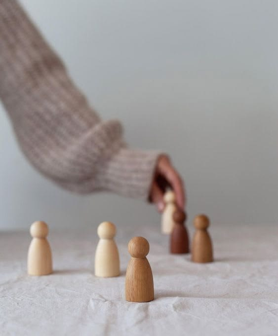
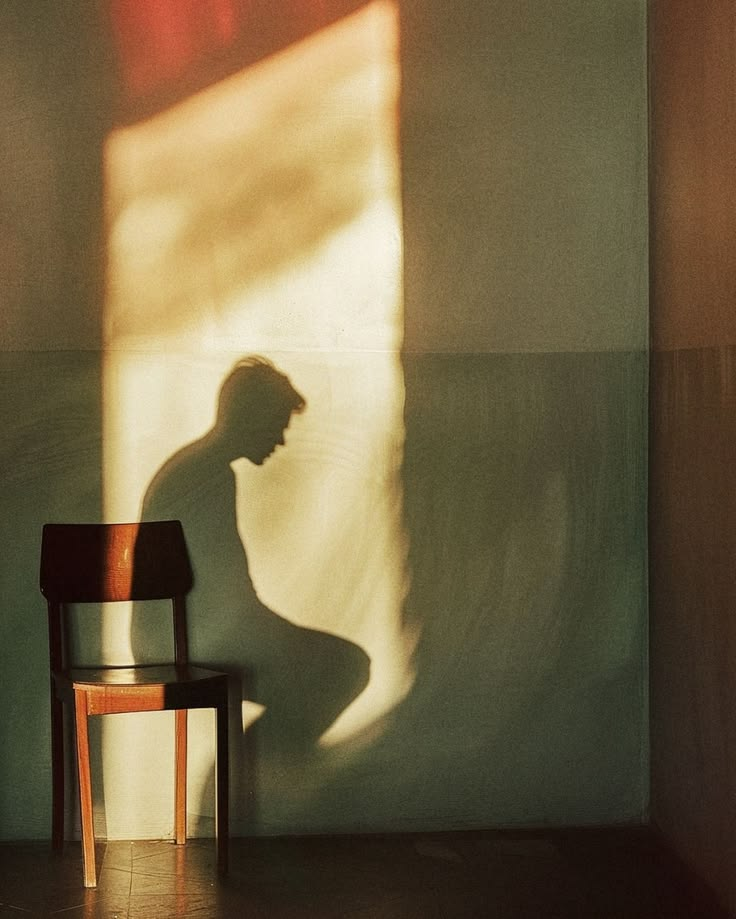
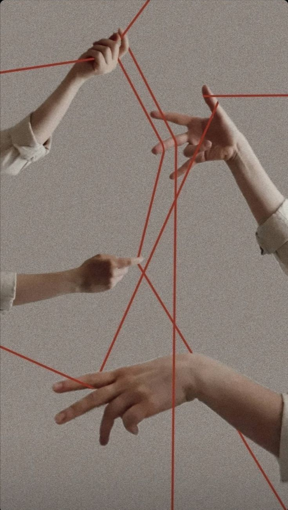
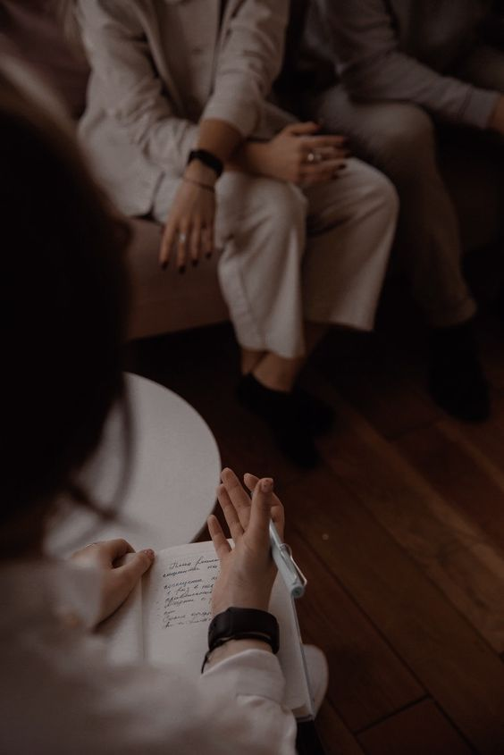
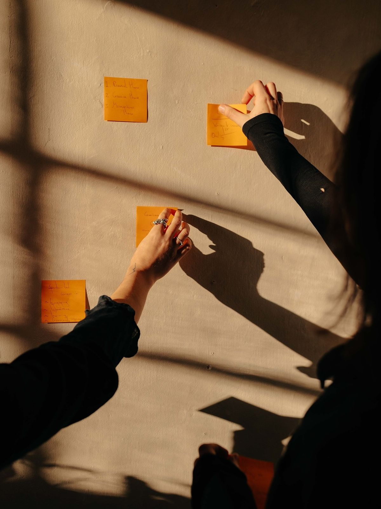

Психология
для себя
Замечать привычные мысли.
Понимать эмоции.
Пробовать новые действия.

( 01 ) / ШКОЛА «ОПОРА»
Школа для тех, кому интересно, как связаны наши мысли, чувства и поступки. И как знание психологии превращается в бережный разговор с собой и другими.
В центре — когнитивно-поведенческий подход.
Ясная теория. Внимание к человеку. Практика.

↓( 02 ) / КОГНИТИВНО-ПОВЕДЕНЧЕСКИЙ ПОДХОД
КПТ помогает исследовать, как интерпретация ситуации связана с эмоциями и поведением. Вместе со специалистом человек учится проверять свои мысли и осваивать новые способы действия.
О подходе — Beck Institute ↗( 03 ) / НАПРАВЛЕНИЯ
Два маршрута знакомства с подходом.
Для себя и для профессионального развития.

Замечать привычные мысли.
Понимать эмоции.
Пробовать новые действия.

Когнитивная модель,
структура сессии
и разбор учебных ситуаций.

( 04 ) / КАК УЧИТЬСЯ
Короткие тематические уроки: понятия, примеры и вопросы для самостоятельного размышления.
Учебные диалоги и разбор ситуаций помогают увидеть, как теория работает в разговоре.
Обсуждение трудностей и обратная связь. Для специалистов супервизия — отдельная часть профессионального развития.
( 05 ) / КОГНИТИВНАЯ МОДЕЛЬ
Одна и та же ситуация может получать разные объяснения. В КПТ их учатся замечать и исследовать.
Что произошло?
Наблюдаемые факты.
Как я это объясняю?
Что приходит в голову?
Что я чувствую?
Как реагирует тело?
Что я делаю?
Как это влияет на ситуацию?
( 06 ) / БИБЛИОТЕКА ЗНАКОМСТВА
Открытые материалы профессиональных организаций. Можно начать читать уже сейчас.

( 07 ) / ВАШ ПЕРВЫЙ ШАГ
«Опора» — вымышленная школа, созданная как дизайн-концепт.
Набор на обучение не ведётся. Материалы знакомят с подходом и не заменяют терапию.
Школа психологии и когнитивно-поведенческого подхода